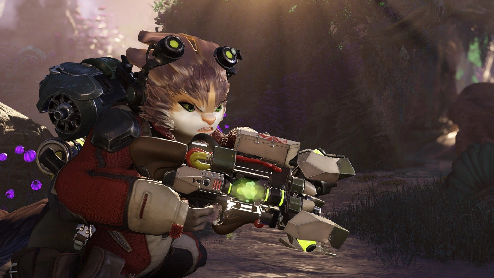

Crucible, o novo jogo da Amazon volta para beta fechado.
Com menos de seis semanas desde o lançamento, Crucible, o primeiro multiplayer free-to-play da Amazon está voltando para beta fechado. O Anúncio foi feito em uma postagem no site oficial do jogo nessa terça-feira dia 30.
Colin Johanson, o desenvolvedor que lidera o projeto, explicou que o motivo, e principal objetivo dessa decisão é aprimorar o jogo “Estamos dando um novo passo que irá nos ajudar a focar em fornecer a melhor experiência para nossos jogadores à medida que continuaremos a melhorar o jogo”. Jogadores casuais a altamente competitivos vão participar de um concelho comunitário que jogará semanalmente com os desenvolvedores e fornecerão seus feedbacks à equipe.
O plano da Relentless Studios é continuar a seguir o roteiro estabelecido anteriormente e trabalhar nas alterações de mapa, combate e sistema para melhorar a experiência do Heart of the Hives, além de implementar outras melhorias com base nos comentários dos jogadores e no que acharem que o jogo precisa para prosperar.
Se você quer ter a experiência de jogar Crucible na versão beta fechada, ainda há tempo, você tem até o dia de hoje para adquirir o jogo no Steam. Para os que já garantiram o game, a experiência como jogador continuará mais ou menos a mesma, a maior mudança será a oportunidade de jogar com os desenvolvedores. O jogo continuará acessível 24 horas por dia, 7 dias por semana, e você ainda poderá transmitir o jogo via stream, compartilhar as capturas de tela, clipes e falar sobre a experiência na versão beta. Em um futuro próximo, os novos interessados poderão se inscrever no playcrucible.com para tentar obter acesso.
Um dos possíveis fatores para essa decisão por parte dos desenvolvedores, pode ter sido a baixa atenção captada pelo jogo, que teve seu pico de jogadores simultâneos logo após o seu lançamento em maio, um total de 10.600. Mas desde então teve uma queda drástica em seus números, chegando a apenas 183 ontem, segundo números públicos. O bom sinal é que nunca houveram zero jogadores, e as partidas continuam acontecendo o dia todo.
Com uma série de problemas e um lançamento um tanto quanto polemico, onde a Relentless e Amazon confirmaram que removeriam dois modos de jogo, Harvester Command e Alpha Hunters, deixando apenas o Hearts of the Hives para os jogadores experimentarem, esse retrocesso ao beta é um grande passo para atrás, principalmente para um título lançado por uma gigante como a Amazon.